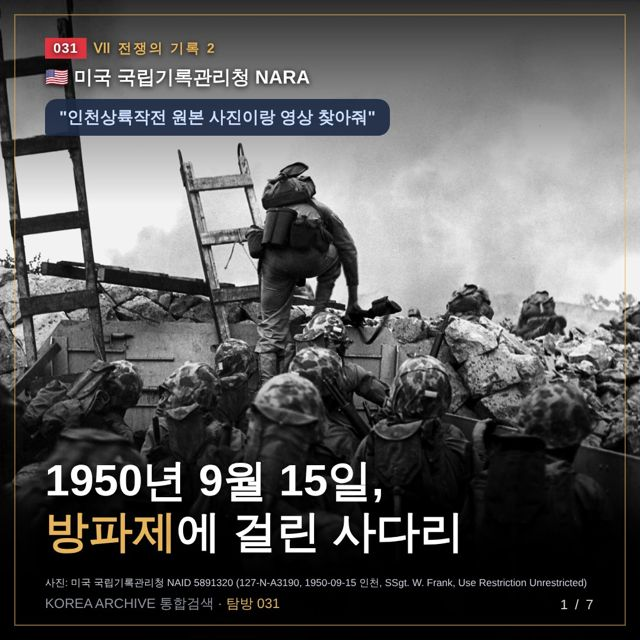

031 · 🇺🇸 미국 국립기록관리청 NARA🎞 영상 해설
1950.9.15 인천 — 사다리로 넘은 방파제
"인천상륙작전 원본 사진이랑 영상 찾아줘"
- 사진127-N-A3190 · 해병대 사진 파일(RG 127) · 1950-09-15
- 원 설명"Leathernecks use scaling ladders to storm ashore at Inchon" — By SSgt. W. Frank
- 영상NAID 79592 「OPERATIONS AT INCHON, KOREA」 428-NPC-13480 · 1950-09-17 · 5분 29초